Chương II — Chi trên (Upper Extremities)
II. Chi Trên
CƠ THANG GIỮA
Nằm Ngửa và Nằm Sấp
Điểm bám: C7 đến T5 và gai của bả vai
Tác dụng: Kéo bả vai về sau
Cánh tay được giang 90°, khuỷu tay khóa. Đặt tay trên cẳng tay mặt sau phía trên cổ tay và chống lại chuyển động xuống dưới.
Cơ chính: Ngực
Cơ đối kháng: Cơ ngực lớn phần đòn, cơ ngực nhỏ, cơ răng trước
Cơ hiệp đồng: Cơ hình thoi, cơ delta sau, cơ tam đầu, cơ duỗi cổ tay
Cánh tay được giang 90°, khuỷu tay khóa. Đặt tay bạn trên cẳng tay mặt trước phía trên cổ tay để đỡ tay khách hàng. Đặt tay kia trên cẳng tay mặt sau phía trên cổ tay và nhẹ nhàng chống lại chuyển động lên trên!


10 Liệu Pháp Thần Kinh – Cơ
CƠ THANG DƯỚI
Nằm Ngửa và Nằm Sấp
Điểm bám: T5-12 và gốc của gai của bả vai
Tác dụng: Hạ và xoay lên của bả vai
Cánh tay được giang 135° với khuỷu tay khóa
Đặt tay trên cẳng tay mặt sau phía trên cổ tay. Chống lại chuyển động xuống dưới.
Cơ chính: Ngực
Cơ đối kháng: Cơ ngực lớn phần ức, cơ thang trên, cơ nâng bả vai, cơ hình thoi, cơ ngực nhỏ
Cơ hiệp đồng: Cơ duỗi cổ tay, cơ tam đầu, cơ delta sau, cơ lưng rộng, cơ tròn nhỏ, cơ dưới gai
Cánh tay được giang 135°, khuỷu tay khóa. Đặt một tay trên cẳng tay mặt trước phía trên cổ tay để đỡ cánh tay, tay kia đặt trên cẳng tay mặt sau phía trên cổ tay.
Chống lại chuyển động lên trên nhẹ nhàng!
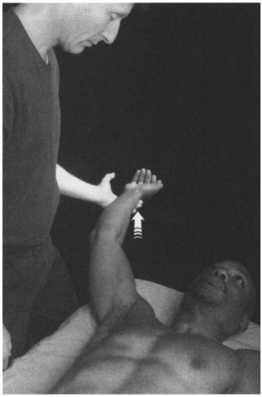
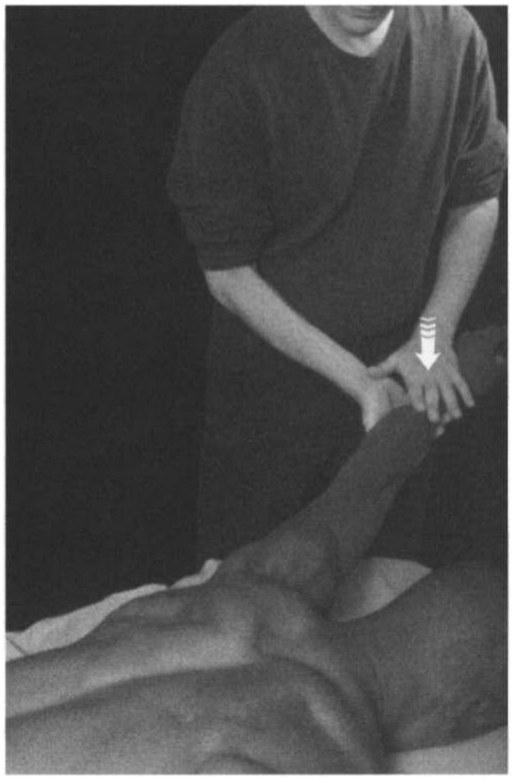
CƠ LƯNG RỘNG
Nằm Ngửa và Nằm Sấp
Tay Thẳng
Điểm bám: Xương cùng, mào chậu, T7-12, góc dưới của bả vai và rãnh nhị đầu
Tác dụng: Duỗi, xoay trong, và khép cánh tay
Cánh tay được khép và xoay trong sát thân, khuỷu tay khóa. Đặt tay trên mặt sau cẳng tay phía trên cổ tay. Chống lại chuyển động khép.
Chi Trên 11
Cơ chính: Ngực, thắt lưng
Cơ đối kháng: Cơ giang cánh tay, cơ xoay ngoài cánh tay, cơ gập cánh tay
Cơ hiệp đồng: Cơ khép cánh tay, cơ xoay trong cánh tay, cơ duỗi cánh tay
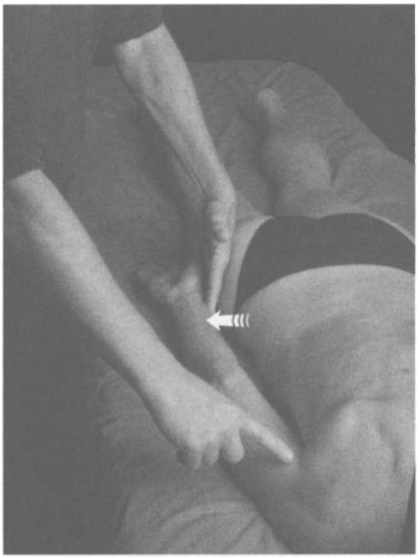

12 Liệu Pháp Thần Kinh – Cơ
CƠ LƯNG RỘNG
Tay Cong
Điểm bám: Góc dưới của bả vai và rãnh nhị đầu
Tác dụng: Hạ bả vai thông qua cánh tay
Cơ chính: Ngực
Cơ đối kháng: Cơ thang trên, cơ nâng bả vai
Cơ hiệp đồng: Cơ tròn lớn, cơ thang dưới, cơ tròn nhỏ
Chi tiết cơ lưng rộng
Cánh tay được giang 90°, khuỷu tay gập 90°, vai xoay ngoài. Chống lại chuyển động khép tại khuỷu tay.


CƠ TRÒN LỚN
Nằm Ngửa và Nằm Sấp
Điểm bám: Góc dưới của bả vai và bờ trong của rãnh nhị đầu cánh tay
Tác dụng: Duỗi, xoay trong, và khép cánh tay
Gập khuỷu tay và đặt mu bàn tay khách hàng dưới lưng ở mức thắt lưng. Đặt tay bạn trên mặt trước của khuỷu tay. Chống lại chuyển động xuống dưới.
Chi Trên 13
Cơ chính: Ngực
Cơ đối kháng: Cơ gập cánh tay, cơ xoay ngoài, và cơ giang
Cơ hiệp đồng: Cơ lưng rộng và cơ duỗi cánh tay, cơ xoay trong, và cơ khép
Khuỷu tay gập, mu bàn tay đặt ở lưng dưới.
Đặt một tay trên khuỷu tay và tay kia trên lòng bàn tay. Chống lại chuyển động lên của khuỷu tay.

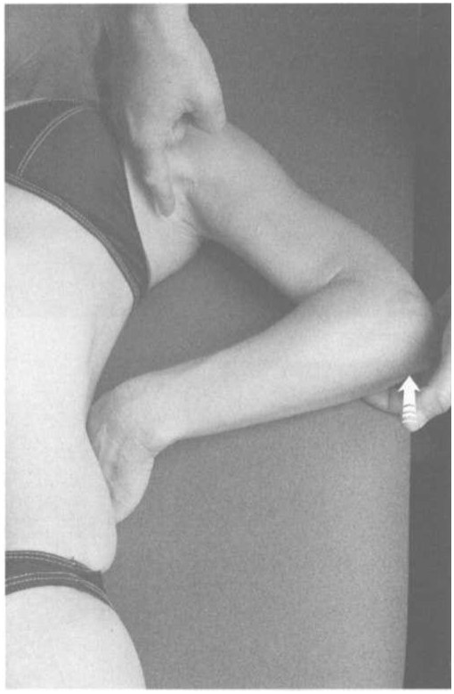
14 Liệu Pháp Thần Kinh – Cơ
CƠ NÂNG BẢ VAI
Nằm Ngửa và Nằm Sấp
Điểm bám: C1-4 và góc trong, trên của bả vai
Tác dụng: Nâng và xoay xuống của bả vai
Cơ chính: Ngực trên, cổ
Cơ đối kháng: Cơ bậc thang, cơ lưng rộng, cơ thang dưới
Cơ hiệp đồng: Cơ delta sau, cơ tam đầu, cơ vuông thắt lưng, cơ mông lớn
Khách hàng xoay đầu nhẹ sang một bên. Chống lại cúi nghiêng cổ phía trên tai bằng một tay, và chống lại sự nâng vai bằng tay kia.
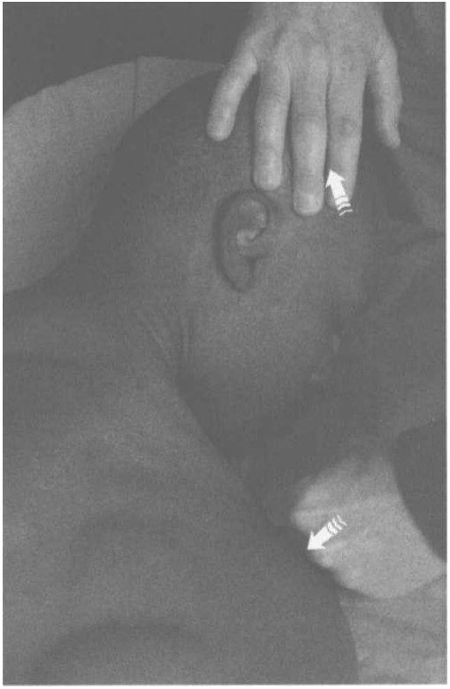
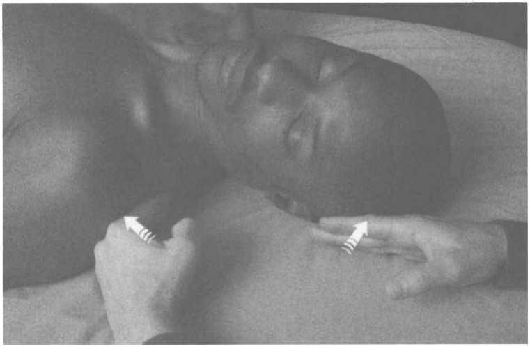
CƠ HÌNH THOI
Nằm Ngửa và Nằm Sấp
Điểm bám: C7-T5 và bờ cột sống của bả vai
Tác dụng: Kéo về sau và xoay xuống của bả vai
Cơ chính: Cổ, ngực
Cơ đối kháng: Cơ ngực nhỏ, cơ răng trước
Cơ hiệp đồng: Cơ thang giữa, cơ lưng rộng, cơ vuông thắt lưng
Chi Trên 15
Cánh tay giang 45°, khuỷu tay gập 90°, lòng bàn tay hướng vào trong. Chống lại khép tại khuỷu tay.
Khuỷu tay gập và giang nhẹ. Chống lại chuyển động khép tại khuỷu tay.

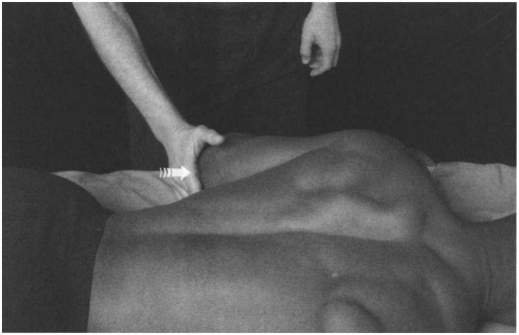
16 Liệu Pháp Thần Kinh – Cơ
CƠ DELTA, TRƯỚC
Nằm Ngửa và Nằm Sấp
Điểm bám: Một phần ba ngoài của xương đòn và củm xương delta
Tác dụng: Gập, khép ngang, xoay trong cánh tay
Chi tiết nhóm cơ delta
Giang cánh tay nhẹ. Đặt tay trên mặt sau cẳng tay phía trên cổ tay. Chống lại cúi cánh tay.
Cơ chính: Ngực
Cơ đối kháng: Cơ delta sau; cơ duỗi, cơ giang ngang, và cơ xoay ngoài cánh tay
Cơ hiệp đồng: Cơ duỗi cổ tay, cơ nhị đầu, cơ cánh tay – mỏ quạ, cơ ngực lớn và nhỏ, cơ dưới bả vai, cơ lưng rộng
Cánh tay giang 90° với khuỷu tay gập 90°.
Chống lại khép ngang bằng một tay trên phần dưới của cơ nhị đầu và tay kia nắm lấy tay khách hàng.
Khuỷu tay khách hàng gập 90°. Đặt tay bạn lên mặt dưới của cánh tay phía trên khuỷu tay.
Chống lại chuyển động xuống dưới của cánh tay.
**Tay trên được đặt phía trên khuỷu tay để ổn định.
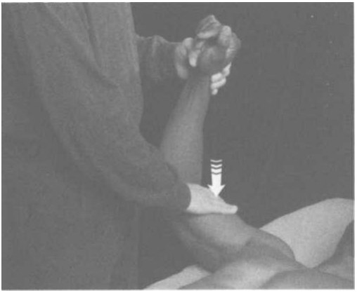

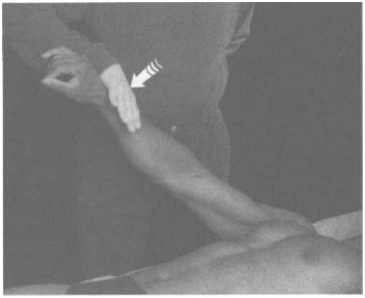

CƠ DELTA, GIỮA
Nằm Ngửa và Nằm Sấp
Điểm bám: Mỏm vai ngoài và củm xương delta
Tác dụng: Giang cánh tay đến 90°
Cánh tay được giang 90° với khuỷu tay gập 90°. Chống lại giang bằng tay phía trên khuỷu tay khách hàng và tay kia giữ cổ tay khách hàng.
Chi Trên 17
Cơ chính: Ngực
Cơ đối kháng: Cơ khép cánh tay
Cơ hiệp đồng: Cơ giang cánh tay
Khuỷu tay khách hàng gập 90°. Đặt tay bạn phía trên khuỷu tay và chống lại giang.


18 Liệu Pháp Thần Kinh – Cơ
CƠ DELTA, SAU
Nằm Ngửa và Nằm Sấp
Điểm bám: Mỏm vai ngoài và củm xương delta
Tác dụng: Duỗi, giang ngang, và xoay ngoài cánh tay
Cơ chính: Ngực
Cơ đối kháng: Cơ delta trước
Cơ hiệp đồng: Cơ tam đầu, cơ thang trên
Khuỷu tay khách hàng gập 90°. Đặt tay bạn trên cánh tay phía trên khuỷu tay. Chống lại chuyển động xuống dưới.
Khuỷu tay gập, cánh tay giang 90°. Đỡ tay khách hàng trong khi đặt tay kia phía trên khuỷu tay. Chống lại chuyển động lên trên.
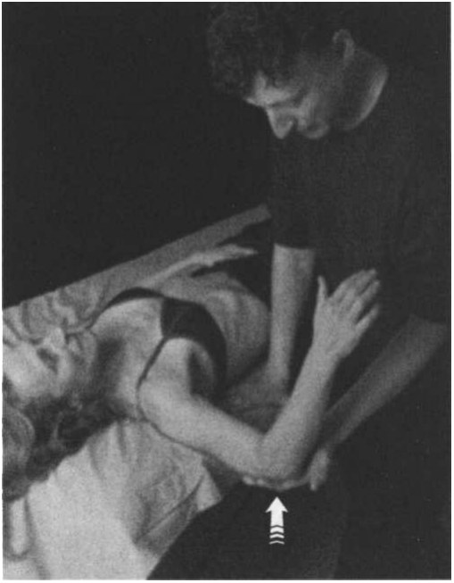

CƠ CÁNH TAY – MỎ QUẠ
Nằm Ngửa
Điểm bám: Mỏm quạ và một phần ba giữa của mặt trong của thân xương cánh tay
Tác dụng: Gập và khép cánh tay
Cơ chính: Ngực
Cơ đối kháng: Cơ duỗi cánh tay và cơ giang
Cơ hiệp đồng: Cơ nhị đầu, cơ delta trước, cơ ngực lớn, cơ khép cánh tay
Chi Trên 19
Cánh tay được giang nhẹ, khuỷu tay gập 90°.
Đặt tay trên cánh tay phía trên khuỷu tay trong khi nắm tay khách hàng. Chống lại gập.


20 Liệu Pháp Thần Kinh – Cơ
CƠ TRÒN NHỎ
Nằm Ngửa và Nằm Sấp
Điểm bám: Bờ nách trên của bả vai và củ lớn của xương cánh tay
Tác dụng: Xoay ngoài cánh tay
Cơ chính: Ngực
Cơ đối kháng: Cơ dưới bả vai
Cơ hiệp đồng: Cơ delta sau, cơ tam đầu, cơ dưới gai, cơ lưng rộng, cơ duỗi cổ tay
Khuỷu tay gập 90° và cánh tay giang 45°
Chống lại xoay ngoài bằng tay phía trên cổ tay khách hàng trong khi ổn định phía đối diện của khuỷu tay.


CƠ DƯỚI GAI
Nằm Ngửa và Nằm Sấp
Điểm bám: Hố dưới gai của bả vai và củ lớn của xương cánh tay
Tác dụng: Xoay ngoài cánh tay
Khuỷu tay gập 90°. Cánh tay cũng giang 90°
Chống lại xoay ngoài bằng tay phía trên cổ tay khách hàng trong khi ổn định phía đối diện của khuỷu tay.
Chi Trên 21
Cơ chính: Ngực
Cơ đối kháng: Cơ dưới bả vai
Cơ hiệp đồng: Cơ delta sau, cơ tam đầu, cơ tròn nhỏ, cơ lưng rộng, cơ duỗi cổ tay

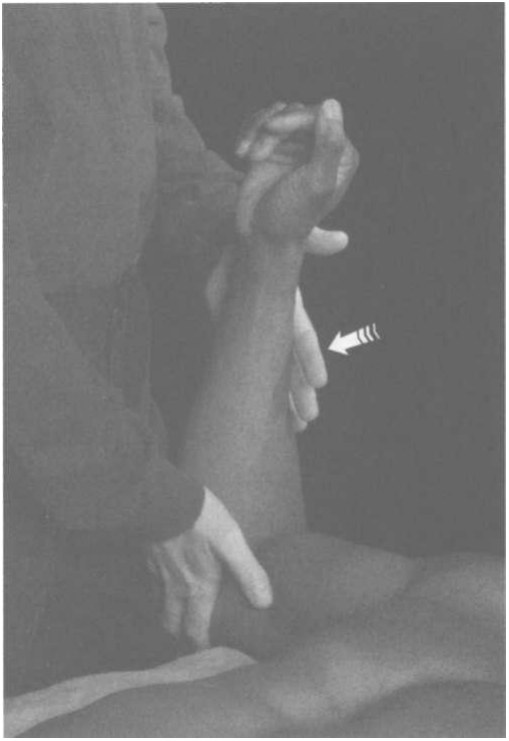
22 Liệu Pháp Thần Kinh – Cơ
CƠ TRÊN GAI
Nằm Ngửa và Nằm Sấp
Điểm bám: Hố trên gai của bả vai và củ lớn của xương cánh tay
Tác dụng: Giang cánh tay
Cơ chính: Ngực
Cơ đối kháng: Cơ khép cánh tay
Cơ hiệp đồng: Cơ delta giữa, cơ duỗi cổ tay, và cơ giang cánh tay
Cánh tay sát thân, khuỷu tay khóa. Chống lại 15° đầu tiên của chuyển động giang.
Cánh tay được giang 10-15° và nâng nhẹ khỏi bàn. Chống lại giang phía trên cổ tay.

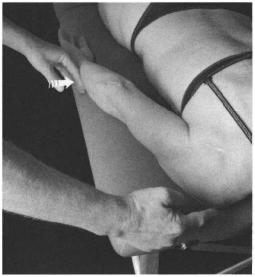
CƠ DƯỚI BẢ VAI
Nằm Ngửa và Nằm Sấp
Điểm bám: Hố dưới bả vai của xương bả vai và củ nhỏ của xương cánh tay
Tác dụng: Xoay trong cánh tay
Cánh tay được giang giữa 45 và 90°
Chống lại xoay trong bằng tay phía trên cổ tay khách hàng trong khi ổn định phía đối diện của khuỷu tay.
Chi Trên 23
Cơ chính: Ngực
Cơ đối kháng: Cơ dưới gai, cơ tròn nhỏ, cơ xoay ngoài cánh tay
Cơ hiệp đồng: Cơ gập cổ tay, cơ xoay trong cánh tay


24 Liệu Pháp Thần Kinh – Cơ
CƠ NGỰC LỚN
PHẦN ĐÒN
Nằm Ngửa và Nằm Sấp
Điểm bám: Nửa trong của xương đòn và rãnh nhị đầu
Cơ chính: Ngực
Cơ đối kháng: Cơ duỗi, cơ giang, cơ giang ngang, và cơ xoay ngoài cánh tay
Cơ hiệp đồng: Cơ gập, cơ khép, cơ khép ngang, và cơ xoay trong của cánh tay
Chi tiết cơ ngực lớn phần đòn
Lòng bàn tay khách hàng hướng về bạn. Hướng mu bàn tay về phía vai đối bên. Chống lại tại cổ tay.
Lòng bàn tay khách hàng hướng xuống sàn. Chống lại chuyển động xuống tại cổ tay.

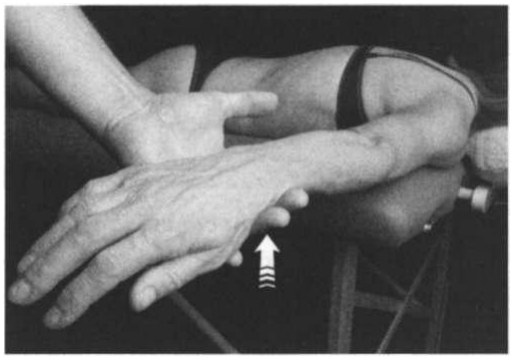

CƠ NGỰC LỚN
PHẦN ĐÒN
Nằm Ngửa và Nằm Sấp
Điểm bám: Sụn ức của các xương sườn I–6 và rãnh nhị đầu
Tác dụng: Khép, khép ngang, xoay trong cánh tay, duỗi cánh tay từ tư thế gập
Cơ chính: Ngực
Cơ đối kháng: Cơ thang dưới và giữa, cơ trám, cơ delta giữa, cơ delta sau
Cơ hiệp đồng: Cơ xiên trong đối bên, cơ nhị đầu, cơ lưng rộng
Chi tiết cơ ngực lớn phần đòn
Chi Trên 25
Khách hàng hướng ngón cái về hông đối bên với khuỷu tay khóa. Kéo nhẹ cánh tay. Ổn định hông đối bên. Chống lại tại cổ tay.
Cánh tay giang 135°. Đặt tay phía trên cổ tay. Chống lại chuyển động xuống.


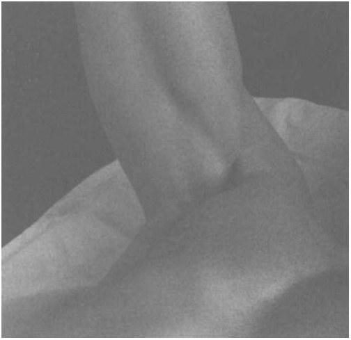
26 Liệu Pháp Thần Kinh – Cơ
CƠ NGỰC NHỎ
Nằm Ngửa
Điểm bám: Các xương sườn 3–5 và mỏm quạ
Tác dụng: Đưa ra trước, hạ, và xoay bả vai xuống
Cơ chính: Ngực
Cơ đối kháng: Các cơ kéo về sau, cơ nâng, và các cơ xoay bả vai lên
Cơ hiệp đồng: Các cơ gập hông đối bên, các cơ đưa ra trước, các cơ hạ, và các cơ xoay bả vai xuống
Bài kiểm tra chống đẩy chức năng
Cơ chính: Ngực
Cơ đối kháng: Cơ trám và cơ thang giữa
Cơ hiệp đồng: Cơ ngực lớn và nhỏ, cơ nhị đầu, cơ delta trước, cơ duỗi và gập cổ tay
Khách hàng nâng vai khỏi bàn. Chống lại sự đưa ra trước trên bầu khớp vai.
Cánh tay giang 90°, khuỷu tay gập. Đặt tay dưới nắm tay khách hàng (hoặc bàn tay mở). Chống lại chuyển động xuống của khách hàng. Bài này kiểm tra cơ ngực nhỏ và cơ ngực lớn.
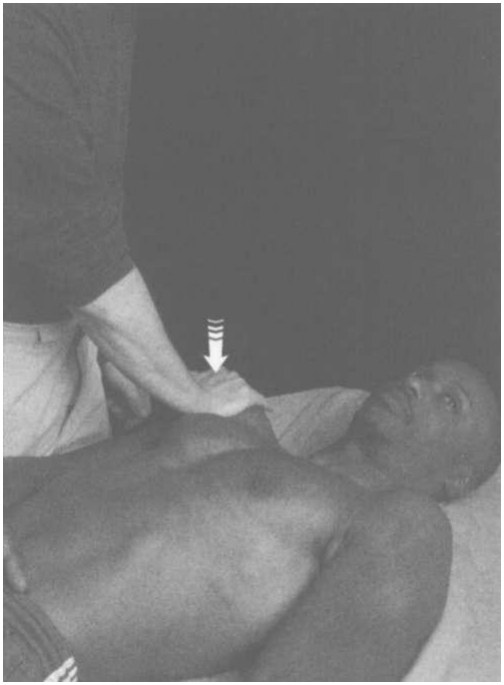

CƠ RĂNG CƯA TRƯỚC
Nằm Ngửa
Điểm bám: Mặt ngoài của tám xương sườn trên và mặt trước của bờ cột sống của bả vai
Tác dụng: Đưa ra trước và xoay bả vai lên; ổn định bả vai so với thành ngực
Thớ trên — Cánh tay gập 90° và giang nhẹ, khuỷu tay khóa. Chống lại chuyển động về phía đuôi phía trên cổ tay.
Chi Trên 27
Cơ chính: Ngực
Cơ đối kháng: Các cơ trám, cơ thang giữa, các cơ xoay bả vai xuống
Cơ hiệp đồng: Các cơ xoay bả vai lên, các cơ đưa bả vai ra trước
Thớ dưới — Cánh tay gập 90° và giang nhẹ, khuỷu tay khóa. Chống lại chuyển động về phía đầu phía trên cổ tay.

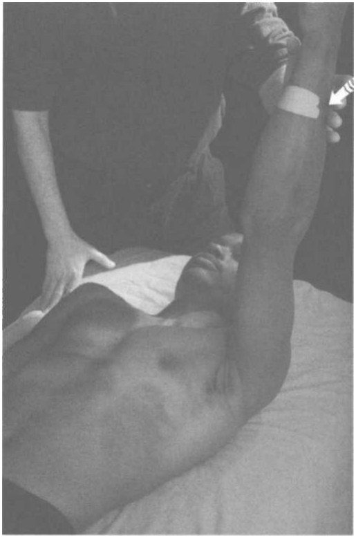
28 Liệu Pháp Thần Kinh – Cơ
CƠ NHỊ ĐẦU, ĐẦU DÀI
Nằm Ngửa và Nằm Sấp
Điểm bám: Củ trên ổ của bả vai và củ của xương quay
Tác dụng: Gập cánh tay, xoay ngửa cẳng tay, giang cánh tay
Cơ chính: Ngực
Cơ đối kháng: Cơ tam đầu, cơ tròn sấp, các cơ khép cánh tay
Cơ hiệp đồng: Cơ delta trước, cơ delta giữa, cơ ngực lớn, cơ trên gai, cơ xoay ngửa
Chi tiết cơ nhị đầu
Cánh tay giang 45°. Chống lại gập khuỷu tay phía trên cổ tay.
Khuỷu tay khách hàng gập 90°. Nắm cẳng tay phía trên khuỷu tay. Chống lại chuyển động đưa tay về vai

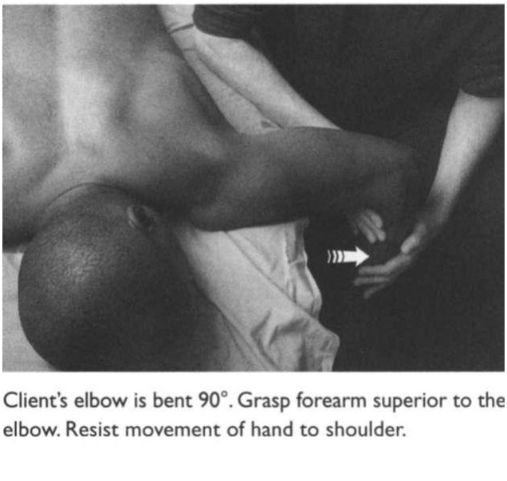

CƠ NHỊ ĐẦU, ĐẦU NGẮN
Nằm Ngửa
Điểm bám: Mỏm quạ và củ của xương quay
Tác dụng: Gập cánh tay, gập khuỷu tay, xoay ngửa cẳng tay, khép cánh tay
Cơ chính: Ngực
Cơ đối kháng: Cơ tam đầu, các cơ duỗi cánh tay, các cơ giang cánh tay, cơ tròn sấp
Cơ hiệp đồng: Cơ cánh tay – mỏ quạ, cơ ngực lớn và nhỏ, cơ delta trước, cơ xoay ngửa
CƠ CÁNH TAY
Nằm Ngửa
Điểm bám: Nửa dưới của thân trước của xương cánh tay và củ của xương trụ, mỏm vẹt của xương trụ
Tác dụng: Gập khuỷu tay
Chi Trên 29
Cánh tay khép, khuỷu tay gập 90°. Chống lại gập khuỷu tay phía trên cổ tay.
Cánh tay giang, khuỷu tay gập 90°, ngón cái hướng về đầu khách hàng. Chống lại gập phía trên cổ tay.


30 Liệu Pháp Thần Kinh – Cơ
CƠ TAM ĐẦU, ĐẦU DÀI
Nằm Ngửa và Nằm Sấp
Điểm bám: Củ dưới ổ của bả vai và mỏm khuỷu
Tác dụng: Duỗi cánh tay, duỗi khuỷu tay
Cơ chính: Ngực
Cơ đối kháng: Các cơ gập cánh tay và các cơ gập khuỷu tay
Cơ hiệp đồng: Các cơ duỗi cánh tay, các cơ duỗi khuỷu tay
CƠ TAM ĐẦU, ĐẦU TRONG
Nằm Ngửa
Điểm bám: Mặt sau xương cánh tay và mỏm khuỷu
Tác dụng: Duỗi khuỷu tay
Cơ chính: Ngực
Cơ đối kháng: Cơ nhị đầu, cơ cánh tay
Cơ hiệp đồng: Cơ delta sau, cơ lưng rộng, cơ tròn nhỏ, cơ dưới gai
Cánh tay khép, lòng bàn tay hướng lên, khuỷu tay khóa.
Chống lại duỗi bằng tay phía trên cổ tay khách hàng.
Cánh tay khách hàng duỗi thẳng sát thân. Nhấc nhẹ khỏi bàn. Đặt tay của bạn lên cẳng tay khách hàng phía trên cổ tay. Chống lại chuyển động lên.
Cánh tay giang nhẹ với khuỷu tay gập 90°. Chống lại duỗi bằng tay phía trên cổ tay.
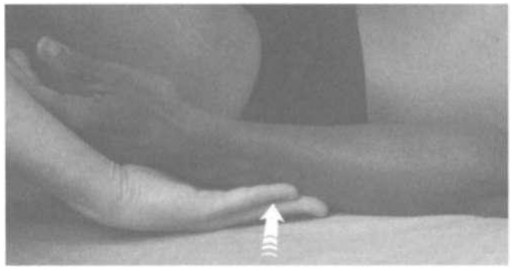


CƠ TAM ĐẦU, ĐẦU NGOÀI
Nằm Ngửa và Nằm Sấp
Điểm bám: Mặt sau xương cánh tay và mỏm khuỷu
Tác dụng: Duỗi khuỷu tay
Cơ chính: Ngực
Cơ đối kháng: Đầu dài của cơ nhị đầu, cơ cánh tay
Cơ hiệp đồng: Cơ delta sau, cơ lưng rộng, cơ tròn nhỏ, cơ dưới gai
CƠ CÁNH TAY – QUAY
Điểm bám: Mặt ngoài đầu dưới của xương cánh tay và mỏm trâm của xương quay
Tác dụng: Gập khuỷu tay trong tư thế trung lập
Cơ chính: Ngực
Cơ đối kháng: Cơ tam đầu
Cơ hiệp đồng: Cơ duỗi ngón cái dài, cơ duỗi cổ tay quay, cơ nhị đầu, cơ cánh tay, cơ delta trước, cơ thang trên, các cơ bậc thang
Chi Trên 31
Cánh tay giang với khuỷu tay gập 90°. Chống lại duỗi bằng tay phía trên cổ tay.
Cánh tay giang 45° với khuỷu tay gập 90°. Chống lại gập khuỷu tay ở đế ngón cái.


32 Liệu Pháp Thần Kinh – Cơ
GẬP
CÁNH TAY
Cơ chính: Ngực
Cơ đối kháng: Các cơ duỗi cánh tay
Cơ hiệp đồng: Các cơ gập cánh tay
DUỖI
CÁNH TAY
Cơ chính: Ngực
Cơ đối kháng: Các cơ gập cánh tay
Cơ hiệp đồng: Các cơ duỗi cánh tay
Cánh tay gập 90°, khuỷu tay khóa. Chống lại gập phía dưới khuỷu tay trong khi nắm cổ tay.
Cánh tay gập 90°, khuỷu tay khóa. Chống lại duỗi phía trên cổ tay.


GIANG
CÁNH TAY
Cơ chính: Ngực
Cơ đối kháng: Các cơ khép cánh tay
Cơ hiệp đồng: Các cơ giang cánh tay
KHÉP
CÁNH TAY
Cơ chính: Ngực
Cơ đối kháng: Các cơ giang cánh tay
Cơ hiệp đồng: Các cơ khép cánh tay
Chi Trên 33
Cánh tay giang 20–30°. Chống lại giang phía trên cổ tay.
Cánh tay khách hàng thẳng, khuỷu tay khóa. Chống lại khép phía trên cổ tay.
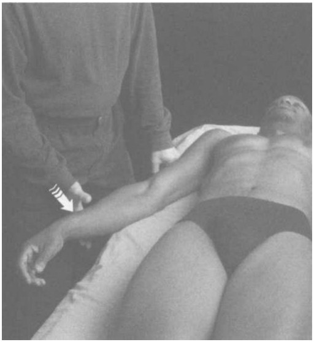

34 Liệu Pháp Thần Kinh – Cơ
NGANG
KHÉP
CÁNH TAY
Cơ chính: Ngực
Cơ đối kháng: Các cơ giang ngang
Cơ hiệp đồng: Các cơ khép ngang
NGANG
GIANG
CÁNH TAY
Cơ chính: Ngực
Cơ đối kháng: Các cơ khép ngang
Cơ hiệp đồng: Các cơ giang ngang
Cánh tay gập 90°, khuỷu tay khóa. Chống lại khép ngang phía trên cổ tay.
Cánh tay gập 90°, khuỷu tay khóa. Chống lại giang ngang phía trên cổ tay.
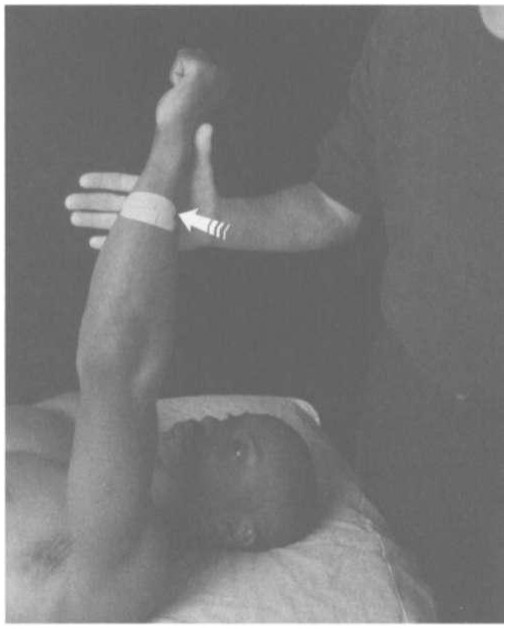
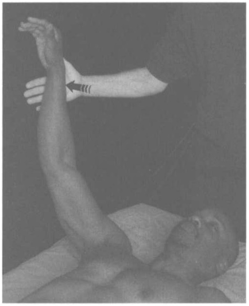
CƠ TRÒN SẤP
Điểm bám: Mỏm lên trong của xương cánh tay và giữa thân ngoài của xương quay
Tác dụng: Xoay sấp cẳng tay
Cơ chính: Ngực
Cơ đối kháng: Cơ xoay ngửa, cơ nhị đầu
Cơ hiệp đồng: Cơ vuông sấp, các cơ xoay trong của vai
CƠ XOAY NGỬA
Điểm bám: Mỏm lên ngoài của xương cánh tay và mặt ngoài của một phần ba trên của xương quay
Tác dụng: Xoay ngửa cẳng tay
Cơ chính: Ngực
Cơ đối kháng: Cơ tròn sấp
Cơ hiệp đồng: Cơ xoay ngửa, cơ nhị đầu, các cơ xoay ngoài của vai
Chi Trên 35
Với khuỷu tay khách hàng gập, nắm ngón cái của anh ấy bằng một tay và đặt mu bàn tay kia lên mu bàn tay khách hàng.
Chống lại xoay sấp bằng cả hai tay.
Khuỷu tay khách hàng gập. Đặt một tay sau ngón cái và ngón trỏ của anh ấy và tay kia lên ụ ngón út.
Chống lại xoay ngửa bằng cả hai tay. Điều này cũng kiểm tra tác dụng xoay ngửa của cơ nhị đầu. Khi cần tốc độ hoặc lực cản lớn hơn, cơ nhị đầu chiếm ưu thế.
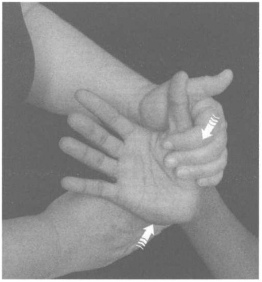
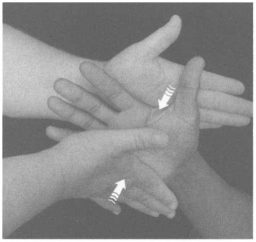
36 Liệu Pháp Thần Kinh – Cơ
CƠ GẬP CỔ TAY
QUAY
Điểm bám: Mỏm lên trong của xương cánh tay và đế của xương bàn tay thứ hai và thứ ba
Tác dụng: Gập và giang cổ tay (lệch quay)
Cơ chính: Ngực
Cơ đối kháng: Cơ duỗi cổ tay quay (gập), các cơ khép cổ tay
Cơ hiệp đồng: Cơ gập cổ tay trụ, cơ gập ngón (cả hai), cơ cánh tay, cơ nhị đầu, cơ cánh tay – mỏ quạ, cơ delta trước, cơ thang trên, cơ bậc thang, cơ duỗi cổ tay quay (giang)
Cổ tay khách hàng gập 45°. Đặt tay của bạn lên mặt trong cổ tay thẳng hàng với ngón cái
Chống lại gập.

CƠ DUỖI CỔ TAY
QUAY DÀI
Điểm bám: Bờ trên mỏm lên ngoài, mỏm lên ngoài của xương cánh tay và đế của xương bàn tay thứ hai
Tác dụng: Duỗi, giang cổ tay (lệch quay)
CƠ DUỖI CỔ TAY
QUAY NGẮN
Điểm bám: Mỏm lên ngoài của xương cánh tay (gân duỗi chung) và đế của xương bàn tay thứ ba
Tác dụng: Duỗi cổ tay
Chi Trên 37
Cơ chính: Ngực
Cơ đối kháng: Cơ gập cổ tay quay (duỗi), các cơ khép cổ tay
Cơ hiệp đồng: Cơ duỗi cổ tay trụ, cơ duỗi ngón, cơ cánh tay – quay, cơ tam đầu, cơ delta sau, cơ thang trên, cơ nâng bả vai, các cơ bậc thang, cơ gập cổ tay quay (giang)
Cổ tay khách hàng duỗi 45°. Đặt tay của bạn lên mặt trong cổ tay thẳng hàng với ngón cái. Chống lại duỗi.

38 Liệu Pháp Thần Kinh – Cơ
CƠ GẬP CỔ TAY
TRỤ
Điểm bám: Đầu cánh tay Mỏm lên trong của xương cánh tay và xương đậu, xương móc, đế của xương bàn tay thứ năm
Đầu trụ — Mặt sau trên của xương trụ, mỏm khuỷu của xương trụ và xương đậu, xương móc, đế của xương bàn tay thứ năm
Tác dụng: Gập, khép cổ tay (lệch trụ)
Cơ chính: Ngực
Cơ đối kháng: Cơ duỗi cổ tay quay (gập), các cơ giang cổ tay
Cơ hiệp đồng: Cơ gập cổ tay quay, cơ gập ngón (cả hai), cơ cánh tay, cơ nhị đầu, cơ cánh tay – mỏ quạ, cơ delta trước, cơ thang trên, cơ bậc thang, cơ duỗi cổ tay trụ (khép)
Cổ tay khách hàng gập 45°. Đặt tay của bạn lên mặt trong cổ tay thẳng hàng với ngón cái.
Chống lại gập.

CƠ DUỖI CỔ TAY
TRỤ
Điểm bám: Mỏm lên ngoài của xương cánh tay (gân duỗi chung) và đế của xương bàn tay thứ năm
Tác dụng: Duỗi, khép cổ tay (lệch trụ)
Cơ chính: Ngực
Cơ đối kháng: Cơ gập cổ tay trụ (gập), các cơ giang cổ tay
Cơ hiệp đồng: Cơ duỗi cổ tay quay, cơ duỗi ngón, cơ cánh tay – quay, cơ tam đầu, cơ delta sau, cơ nâng bả vai, cơ thang trên, các cơ bậc thang, cơ gập cổ tay trụ (khép)
Chi Trên 39
Cổ tay khách hàng duỗi 45°. Đặt tay của bạn ngay dưới cổ tay thẳng hàng với ngón út. Chống lại duỗi.
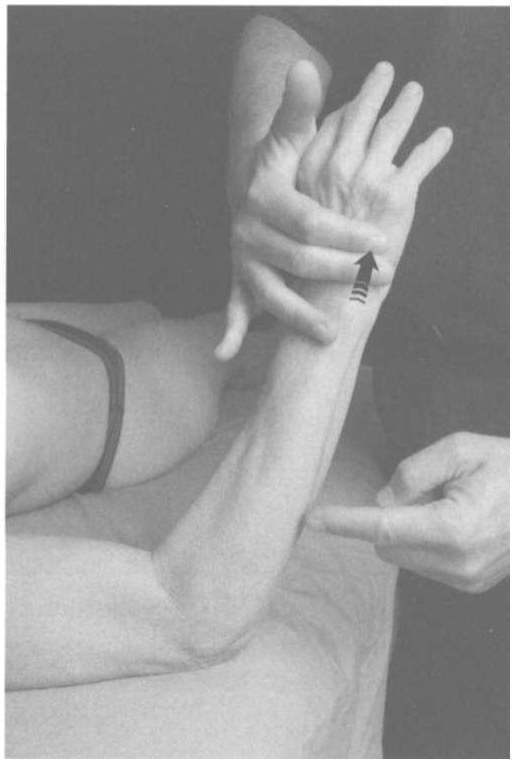
40 Liệu Pháp Thần Kinh – Cơ
GẬP
CỔ TAY
Cơ chính: Ngực, cổ
Cơ đối kháng: Cơ duỗi cổ tay
Cơ hiệp đồng: Cơ gập cổ tay quay, cơ gập cổ tay trụ, cơ gập ngón (cả hai), cơ cánh tay, cơ nhị đầu cánh tay, cơ delta trước
DUỖI
CỔ TAY
Cơ chính: Ngực, cổ
Cơ đối kháng: Cơ gập cổ tay
Cơ hiệp đồng: Cơ duỗi cổ tay quay, cơ duỗi cổ tay trụ, cơ duỗi ngón, cơ cánh tay – quay, cơ tam đầu cánh tay, cơ delta sau
Khách hàng gập khuỷu tay 90°, cổ tay duỗi. Đặt lòng bàn tay của bạn lên lòng bàn tay khách hàng. Giữ ổn định cổ tay bằng tay kia của bạn. Chống lại chuyển động gập.
Gập khuỷu tay 90°, cổ tay gập. Đặt tay của bạn lên mu bàn tay của khách hàng. Giữ ổn định cổ tay bằng tay kia của bạn. Chống lại chuyển động duỗi.
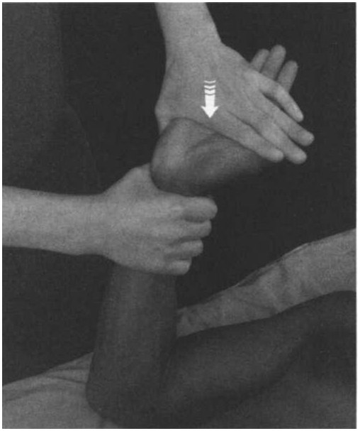
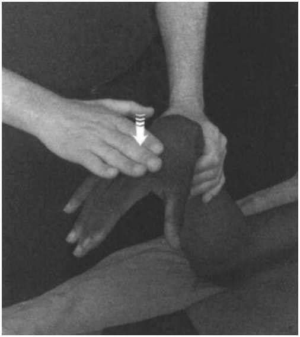
GIANG
CỔ TAY
Cơ chính: Ngực, cổ
Cơ đối kháng: Cơ khép cổ tay
Cơ hiệp đồng: Cơ gập và duỗi cổ tay quay, cơ khép cánh tay
KHÉP
CỔ TAY
Cơ chính: Ngực, cổ
Cơ đối kháng: Cơ giang cổ tay
Cơ hiệp đồng: Cơ gập và duỗi cổ tay trụ, cơ giang cánh tay
Chi trên 41
Gập khuỷu tay 90°; cổ tay hơi khép. Đặt tay của bạn dưới ngón cái khách hàng trên cổ tay trong khi tay kia giữ ổn định cổ tay. Chống lại chuyển động giang.
Gập khuỷu tay 90°; cổ tay hơi khép. Nắm bên ngoài bàn tay khách hàng trong khi giữ ổn định cổ tay bằng tay kia của bạn. Chống lại chuyển động khép.

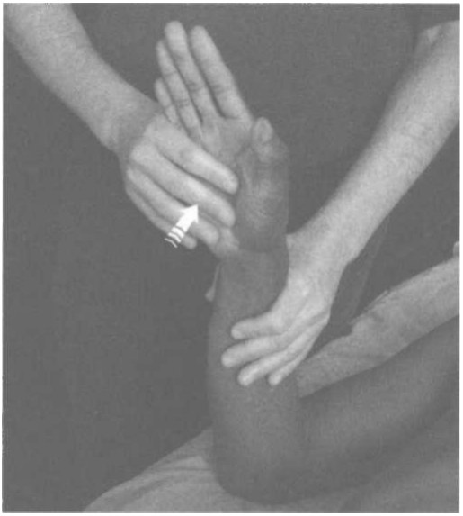
42 Liệu Pháp Thần Kinh – Cơ
CƠ GẬP NGÓN
NÔNG
Điểm bám: Đầu cánh tay – Mép trong xương cánh tay và Hai bên thân các đốt giữa của bốn ngón tay
Đầu trụ – Mỏ quạ của xương trụ và Hai bên thân các đốt giữa của bốn ngón tay
Đầu quay – Đường chéo trước của xương quay và Hai bên thân các đốt giữa của bốn ngón tay
Chức năng: Gập các đốt giữa của bốn ngón tay tại khớp liên đốt gần (PIP – proximal interphalangeal); hỗ trợ gập cổ tay
Cơ chính: Ngực
Cơ đối kháng: Cơ duỗi ngón
Cơ hiệp đồng: Cơ gập ngón sâu, cơ gập cổ tay quay; và cơ gập cổ tay trụ, cơ cánh tay, cơ nhị đầu cánh tay, cơ cánh tay – mỏ quạ, cơ delta trước, cơ thang trên, cơ bậc thang
Cổ tay khách hàng gập 45°. Đặt các ngón tay của bạn lên từng khớp PIP của các ngón tay từ hai đến năm. Chống lại chuyển động gập.

CƠ GẬP NGÓN
SÂU
Điểm bám: Giữa xương trụ trước, màng liên cốt và Đáy của các đốt xa của bốn ngón tay
Chức năng: Gập các đốt xa của bốn ngón tay tại khớp DIP (liên đốt xa) hỗ trợ gập cổ tay
Cơ chính: Ngực
Cơ đối kháng: Cơ duỗi ngón
Cơ hiệp đồng: Cơ gập ngón nông, cơ gập cổ tay quay và trụ, cơ cánh tay, cơ nhị đầu, cơ cánh tay – mỏ quạ, cơ delta trước, cơ thang trên, cơ bậc thang
Chi trên 43
Cổ tay khách hàng gập 45°. Đặt các ngón tay của bạn lên từng khớp DIP của các ngón tay từ hai đến năm. Chống lại chuyển động gập.
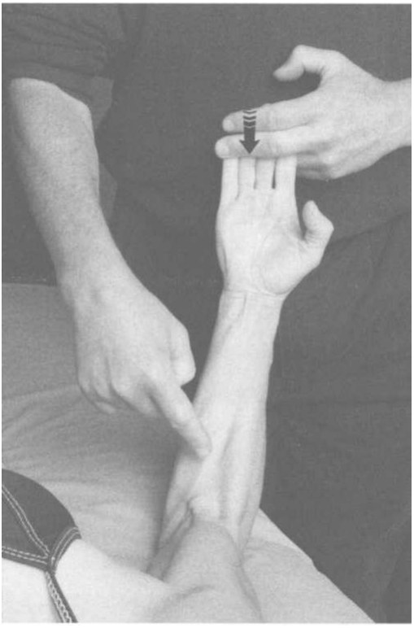
44 Liệu Pháp Thần Kinh – Cơ
CƠ DUỖI
NGÓN
Điểm bám: Mép ngoài của xương cánh tay (gân duỗi chung) và
Mạc duỗi của bốn ngón tay
Chức năng: Duỗi các đốt gần của bốn ngón tay tại khớp MP (bàn ngón); hỗ trợ duỗi cổ tay
Cơ chính: Ngực
Cơ đối kháng: Cơ gập ngón nông và sâu
Cơ hiệp đồng: Cơ duỗi cổ tay quay và trụ, cơ cánh tay – quay, cơ tam đầu cánh tay, cơ delta sau, cơ nâng bả vai, cơ thang trên, các cơ bậc thang
Cổ tay khách hàng duỗi 45°. Đặt các ngón tay của bạn lên mu bàn tay từ ngón trỏ đến ngón út
Chống lại chuyển động duỗi.

CƠ GẬP NGÓN CÁI
DÀI
Điểm bám: Xương quay trước, màng liên cốt và Đốt xa của ngón cái
Chức năng: Gập đốt xa của ngón cái
Cơ chính: Ngực
Cơ đối kháng: Cơ duỗi ngón cái dài
Cơ hiệp đồng: Cơ gập cổ tay quay, cơ cánh tay, cơ nhị đầu cánh tay, cơ delta trước, cơ thang trên, cơ bậc thang
CƠ DUỖI NGÓN CÁI
DÀI
Điểm bám: Xương trụ sau, màng liên cốt và Đáy của đốt xa của ngón cái
Chức năng: Duỗi đốt xa của ngón cái
Cơ chính: Ngực
Cơ đối kháng: Cơ gập ngón cái dài
Cơ hiệp đồng: Cơ duỗi cổ tay quay, cơ cánh tay – quay, cơ tam đầu cánh tay, cơ delta sau, cơ thang trên, cơ bậc thang
Chi trên 45
Khách hàng gập khuỷu tay 90°, các ngón tay cuộn vào lòng bàn tay. Đặt ngón trỏ của bạn lên mặt trước của ngón cái duỗi thẳng khách hàng ở đốt xa. Chống lại chuyển động gập.
Với khuỷu tay khách hàng gập 90°, nắm bốn ngón tay của khách hàng bằng một tay và cuộn vào lòng bàn tay. Đặt ngón trỏ kia của bạn lên mặt sau ngón cái của khách hàng, đốt xa. Chống lại chuyển động duỗi.
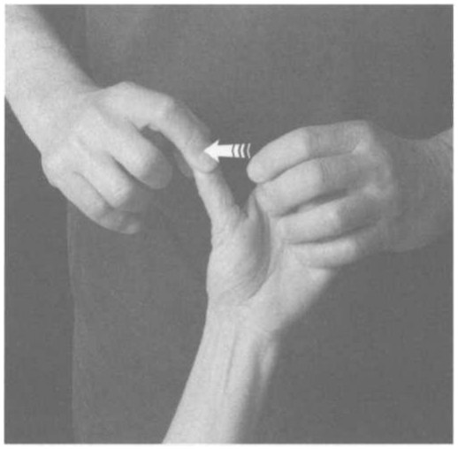

46 Liệu Pháp Thần Kinh – Cơ
CƠ GẬP NGÓN CÁI
NGẮN
Điểm bám: Dây chằng gập và các xương cổ tay và Đáy của đốt gần ngón cái
Chức năng: Gập đốt gần của ngón cái
Cơ chính: Ngực
Cơ đối kháng: Cơ duỗi ngón cái ngắn
Cơ hiệp đồng: Cơ gập cổ tay quay, cơ cánh tay, cơ nhị đầu cánh tay, cơ delta trước, cơ thang trên, cơ bậc thang, cơ gập ngón cái dài
Khách hàng gập khuỷu tay, các ngón tay cuộn vào lòng bàn tay.
Đặt ngón trỏ của bạn lên đầu ngón cái đang gập của khách hàng. Chống lại chuyển động gập.

CƠ DUỖI NGÓN CÁI
NGẮN
Điểm bám: Xương quay sau, màng liên cốt và Đáy của đốt gần của ngón cái
Chức năng: Duỗi đốt gần của ngón cái
Cơ chính: Ngực
Cơ đối kháng: Cơ gập ngón cái ngắn
Cơ hiệp đồng: Cơ duỗi cổ tay quay, cơ cánh tay – quay, cơ tam đầu cánh tay, cơ delta sau, cơ thang trên, cơ bậc thang, cơ duỗi ngón cái dài
Chi trên 47
Khách hàng gập khuỷu tay 90°, bốn ngón tay cuộn vào lòng bàn tay, ngón cái gập. Đặt ngón trỏ của bạn lên mặt sau ngón cái khách hàng, đốt gần. Chống lại chuyển động duỗi.

48 Liệu Pháp Thần Kinh – Cơ
CƠ KHÉP NGÓN CÁI
Điểm bám: Đầu ngang – Mặt trước thân xương bàn tay thứ ba
Đầu chéo – Đáy xương bàn tay thứ hai và thứ ba, xương đầu, xương thang nhỏ, xương thang lớn và Đáy của đốt gần ngón cái (mặt trong)
Chức năng: Khép xương bàn tay thứ nhất của ngón cái tại khớp CM (bàn – ngón)
Cơ chính: Ngực
Cơ đối kháng: Cơ giang ngón cái dài và ngắn
Cơ hiệp đồng: Cơ gập ngón cái dài và ngắn, cơ đối chiếu ngón cái
Đặt ngón cái khách hàng áp vào ngón trỏ của khách hàng.
Kéo ngón cái ra xa ngón trỏ.
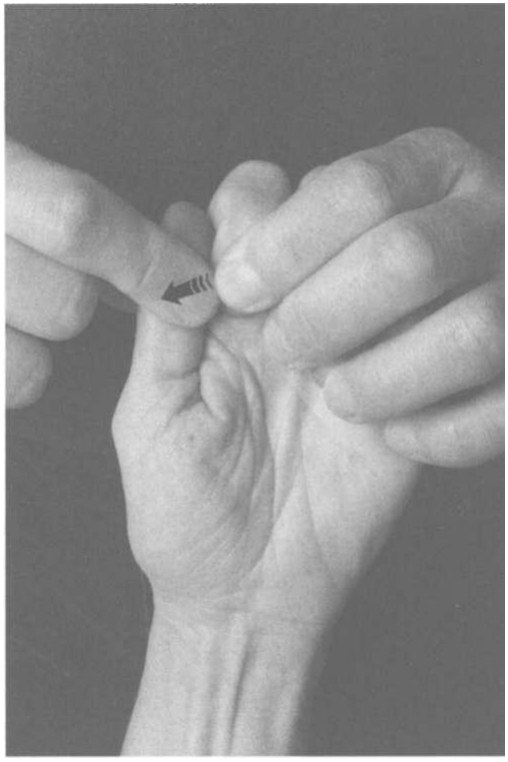
CƠ GIANG NGÓN CÁI
DÀI
Điểm bám: Xương quay sau, xương trụ, màng liên cốt và Đáy của xương bàn tay thứ nhất
Chức năng: Giang xương bàn tay thứ nhất của ngón cái tại khớp CM; cũng hỗ trợ giang cổ tay
Cơ chính: Ngực
Cơ đối kháng: Cơ khép ngón cái
Cơ hiệp đồng: Cơ duỗi ngón cái dài và ngắn, cơ duỗi cổ tay quay và trụ, cơ cánh tay – quay, cơ tam đầu cánh tay, cơ delta sau, cơ thang trên, cơ bậc thang
Chi trên 49
Đặt ngón cái khách hàng áp vào ngón trỏ của khách hàng rồi đưa hơi tách ra. Đặt ngón trỏ của bạn lên mặt sau ngón cái khách hàng, đốt xa.
Chống lại chuyển động giang.
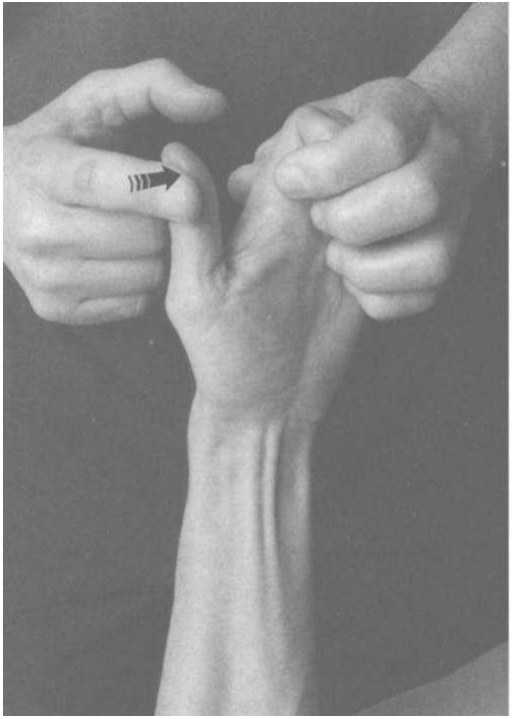
50 Liệu Pháp Thần Kinh – Cơ
ĐỐI CHIẾU NGÓN CÁI –
NGÓN TAY
Cơ đối chiếu ngón cái
Điểm bám: Dây chằng gập, xương thang lớn và Xương bàn tay thứ nhất ở mặt ngoài
Chức năng: Đối chiếu ngón cái tại khớp CM
Cơ đối chiếu ngón út
Điểm bám: Dây chằng gập, móc của xương móc và Bờ trụ của xương bàn tay thứ năm
Chức năng: Gập đốt gần của ngón út tại khớp MP
Cơ chính: Ngực, cổ
Cơ đối kháng: Cơ duỗi ngón cái và các ngón
Cơ hiệp đồng: Cơ gập cổ tay, cơ nhị đầu cánh tay, cơ delta trước, cơ thang, các cơ bậc thang, cơ đối chiếu ngón cái, cơ gập ngón (cả hai)
Cơ chính: Ngực
Cơ đối kháng: Cơ duỗi ngón cái và các ngón
Cơ hiệp đồng: (Tất cả các cơ nắm), cơ gập ngón (cả hai), cơ gập ngón cái dài và ngắn, cơ gập cổ tay quay và trụ
Đặt đầu ngón cái và ngón út của khách hàng lại với nhau. Yêu cầu khách hàng giữ chúng lại với nhau trong khi bạn cố gắng kéo tách vừa phải.
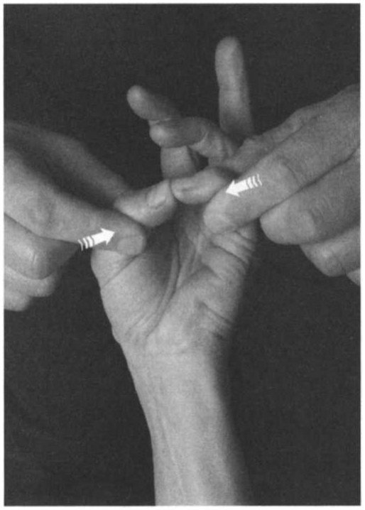
Chức năng nhóm cơ của chi trên
CƠ NÂNG
BẢ VAI
Phía sau 1. Cơ thang trên 2. Cơ nâng bả vai
CƠ HẠ
BẢ VAI
Phía trước và phía sau 1. Cơ ngực 2. Cơ thang dưới
Chi trên 51
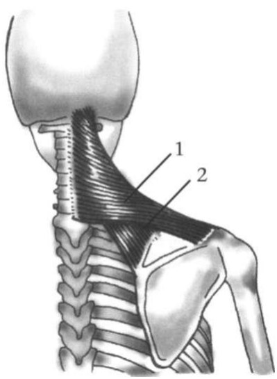
52 Liệu Pháp Thần Kinh – Cơ
CƠ ĐƯA RA TRƯỚC
BẢ VAI
Phía trước 1. Cơ ngực nhỏ 2. Cơ răng trước
CƠ KÉO VỀ SAU
BẢ VAI
Phía sau 1. Cơ thang giữa 2. Cơ hình thoi
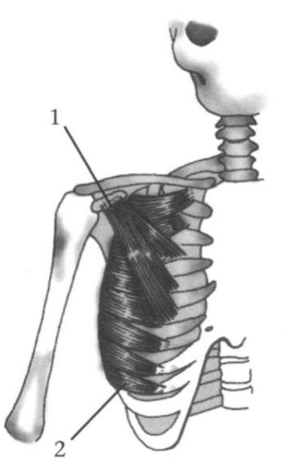

CƠ XOAY LÊN
BẢ VAI
Phía trước 1. Cơ thang trên 2. Cơ thang dưới 3. Cơ răng trước
CƠ XOAY
XUỐNG
BẢ VAI
Phía trước và phía sau 1. Cơ nâng bả vai 2. Các cơ hình thoi 3. Cơ ngực nhỏ
Chi trên 53

54 Liệu Pháp Thần Kinh – Cơ
CƠ XOAY TRONG (NỘI)
CỦA CÁNH
TAY
Phía trước và phía sau 1. Cơ delta trước 2. Cơ ngực lớn 3. Cơ dưới bả vai 4. Cơ tròn lớn 5. Cơ lưng xô
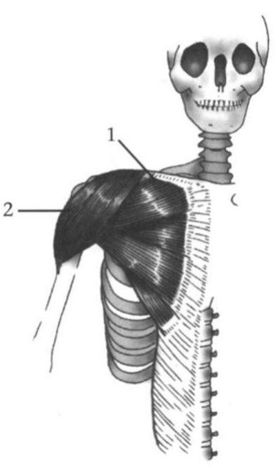


CƠ XOAY NGOÀI (NGOẠI)
CỦA XƯƠNG
CÁNH TAY (HUMERUS)
Mặt sau 1. Cơ trên gai (Supraspinatus) 2. Cơ tròn nhỏ (Teres Minor) 3. Cơ delta sau (Posterior Deltoid)
CƠ GẬP
CÁNH TAY (HUMERUS)
Mặt trước 1. Cơ delta trước (Anterior Deltoid) 2. Cơ ngực lớn (bó đòn) (Pectoralis Major, clavicular head) 3. Cơ quạ cánh tay (Coracobrachialis) 4. Cơ nhị đầu cánh tay (bó ngắn) (Biceps Brachii, short head)
Chi trên 55
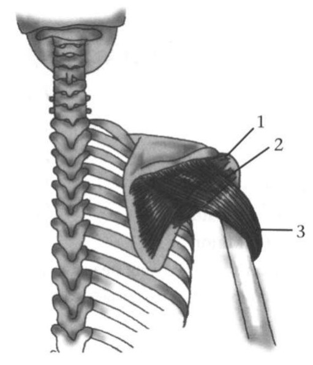

56 Liệu Pháp Thần Kinh – Cơ (NKT)
CƠ DUỖI
CÁNH TAY (HUMERUS)
Mặt sau và mặt trước 1. Cơ lưng rộng (Latissimus Dorsi) 2. Cơ tròn lớn (Teres Major) 3. Cơ delta sau (Posterior Deltoid) 4. Cơ dưới gai (Infraspinatus) 5. Cơ tròn nhỏ (Teres Minor) 6. Cơ tam đầu cánh tay (bó dài) (Triceps Brachii, long head) 7. Cơ ngực lớn (bó ức) (Pectoralis Major, sternal head)


CƠ GIANG
CÁNH TAY (HUMERUS)
Mặt sau 1. Cơ trên gai (Supraspinatus) 2. Cơ delta giữa (Middle Deltoid)
CƠ KHÉP
CÁNH TAY (HUMERUS)
Mặt trước và mặt sau 1. Cơ ngực (Pectoralis) 2. Cơ quạ cánh tay (Coracobrachialis) 3. Cơ lưng rộng (Latissimus Dorsi) 4. Cơ tròn lớn (Teres Major) 5. Cơ dưới vai (Subscapularis)
Chi trên 57
58 Liệu Pháp Thần Kinh – Cơ (NKT)
CƠ GIANG NGANG
CỦA CÁNH TAY
(HUMERUS)
Mặt sau 1. Cơ delta sau (Posterior Deltoid)
CƠ KHÉP NGANG
CỦA CÁNH TAY
(HUMERUS)
Mặt trước 1. Cơ delta trước (Anterior Deltoid) 2. Cơ ngực lớn (Pectoralis Major)
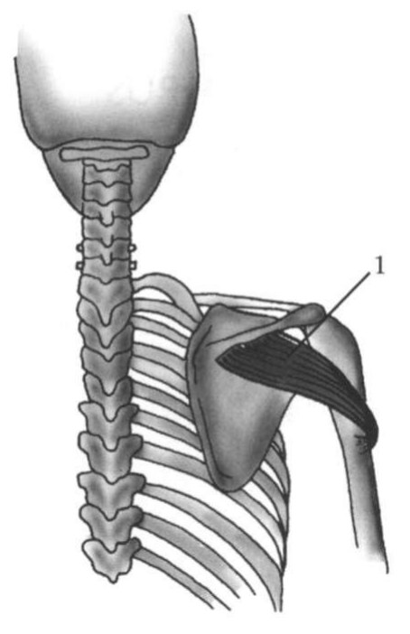
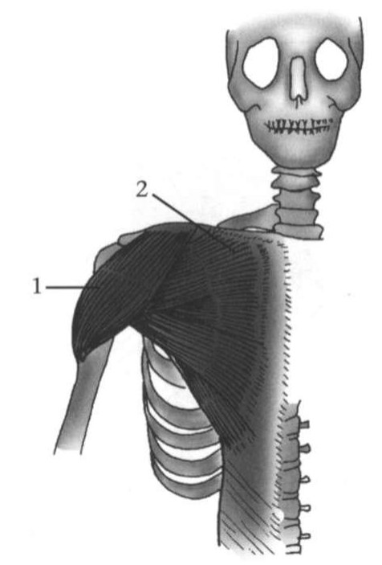
CƠ GẬP
KHUỶU TAY
Mặt trước 1. Cơ nhị đầu cánh tay (Biceps Brachii) 2. Cơ cánh tay (Brachialis) 3. Cơ cánh tay – quay (Brachioradialis) 4. Cơ xoay sấp tròn (Pronator Teres)
CƠ DUỖI
KHUỶU TAY
Mặt sau 1. Cơ tam đầu cánh tay (Triceps Brachii) 2. Cơ khuỷu (Anconeus)
Chi trên 59 3.
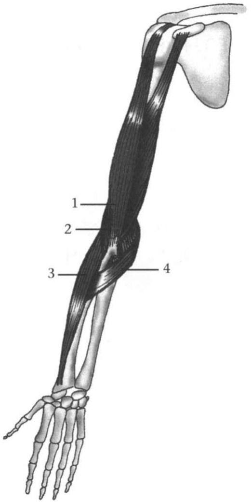
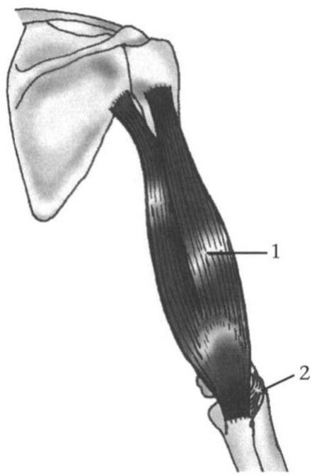
60 Liệu Pháp Thần Kinh – Cơ (NKT)
CƠ XOAY NGỬA
CẲNG TAY
Mặt trước 1. Cơ nhị đầu cánh tay (Biceps Brachii) 2. Cơ xoay ngửa (Supinator)
CƠ XOAY SẤP
CẲNG TAY
Mặt sau 1. Cơ xoay sấp tròn (Pronator Teres) 2. Cơ xoay sấp vuông (Pronator Quadratus)


CƠ GẬP
CỔ TAY
Mặt trước 1. Cơ gập cổ tay quay (Flexor Carpi Radialis) 2. Cơ gập cổ tay trụ (Flexor Carpi Ulnaris) 3. Cơ lòng bàn tay dài (Palmaris Longus)
Chi trên 61
CƠ DUỖI
CỔ TAY
Mặt sau 1. Cơ duỗi cổ tay quay dài (Extensor Carpi Radialis Longus) 2. Cơ duỗi cổ tay quay ngắn (Extensor Carpi Radialis Brevis) 3. Cơ duỗi cổ tay trụ (Extensor Carpi Ulnaris)

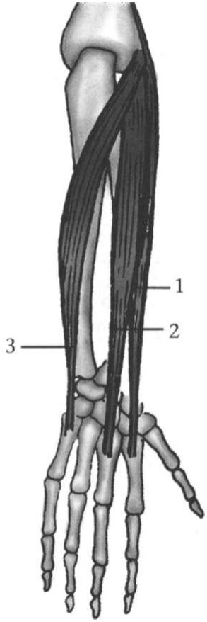
62 Liệu Pháp Thần Kinh – Cơ (NKT)
CƠ GIANG
CỔ TAY
1. Cơ gập cổ tay quay (Flexor Carpi Radialis) 2. Cơ duỗi cổ tay quay dài (Extensor Carpi Radialis Longus)
CƠ KHÉP
CỔ TAY
1. Cơ duỗi cổ tay trụ (Extensor Carpi Ulnaris) 2. Cơ gập cổ tay trụ (Flexor Carpi Ulnaris)
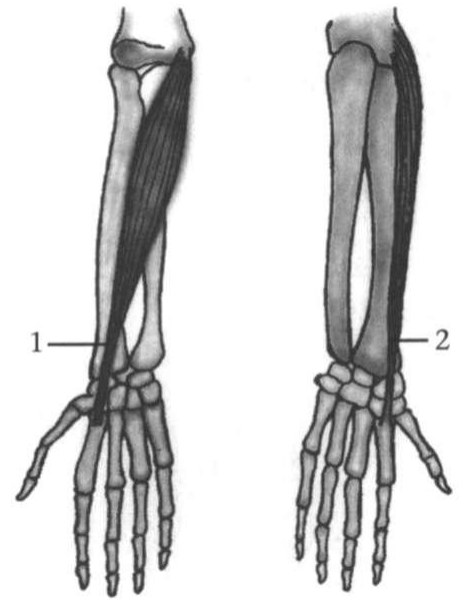
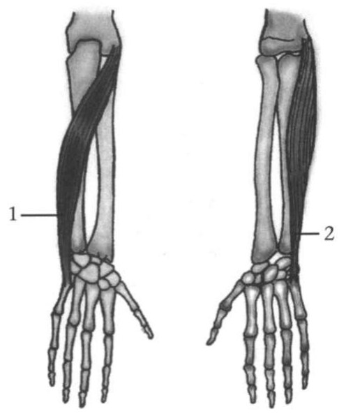
CƠ GIANG NGÓN CÁI
VÀ CÁC NGÓN
Mặt sau
Khớp CM ngón cái (Thumb–CM Joint) 1. Cơ giang ngón cái dài (Abductor Pollicis Longus) 2. Cơ giang ngón cái ngắn (Abductor Pollicis Brevis)
Các khớp MP của các ngón 3. Cơ gian cốt lưng (Dorsal Interossei), ngón hai, ba và bốn 4. Cơ giang ngón út (Abductor Digiti Minimi)
Chi trên 63
CƠ KHÉP NGÓN CÁI
VÀ CÁC NGÓN
Mặt trước
Khớp CM ngón cái 5. Cơ khép ngón cái (Adductor Pollicis)
Các khớp MP các ngón 6. Cơ gian cốt gan tay (Palmar Interossei), ngón hai, ba, bốn và năm 7. Cơ gian cốt lưng (Dorsal Interosseous), ngón ba (chụp ở mặt sau)

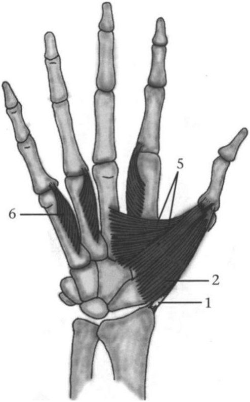
64 Liệu Pháp Thần Kinh – Cơ (NKT)
CƠ DUỖI NGÓN CÁI
VÀ CÁC NGÓN
Mặt sau
Ngón cái, khớp MP 1. Cơ duỗi ngón cái ngắn (Extensor Pollicis Brevis)
Khớp IP (liên đốt) (IP (Interphalangeal) Joint) 2. Cơ duỗi ngón cái dài (Extensor Pollicis Longus)
Các ngón, các khớp MP 3. Cơ duỗi ngón (Extensor Digitorum) 4. Cơ duỗi ngón trỏ (Extensor Indicis) 5. Cơ duỗi ngón út (Extensor Digiti Minimi)
Các khớp DIP và PIP 6. Cơ gian cốt lưng (Dorsal Interossei)
CƠ GẬP NGÓN CÁI
VÀ CÁC NGÓN
Mặt trước
Ngón cái, các khớp MP 7. Cơ gập ngón cái dài (Flexor Pollicis Longus) 8. Cơ gập ngón cái ngắn (Flexor Pollicis Brevis)
Cơ gập ngón út (không trình bày) (Flexor Digiti Minimi, not shown) 9. Cơ gian cốt gan tay (Palmar Interossei)
Các khớp DIP 10. Cơ giun (Lumbricals) 11. Cơ gập ngón sâu (Flexor Digitorum Profundus)
Các khớp PIP 12. Cơ gập ngón nông (Flexor Digitorum Superficialis)
Đối chiếu, ngón cái (Opposition, Thumb) 13. Cơ đối ngón cái (Opponens Pollicis)
Đối chiếu, ngón út (Opposition, Little Finger) 14. Cơ đối ngón út (Opponens Digiti Minimi) 11 10 13 11

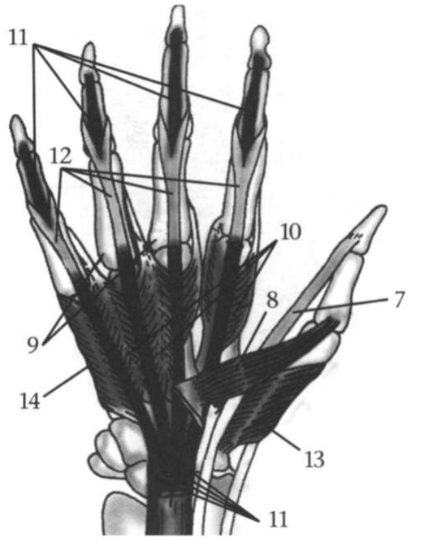